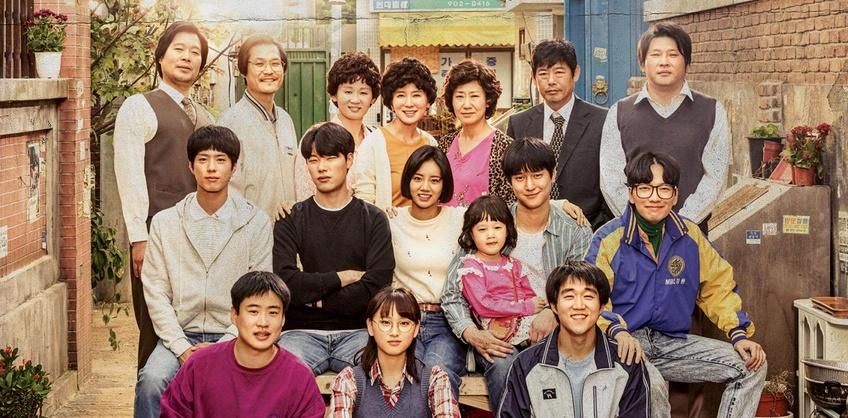
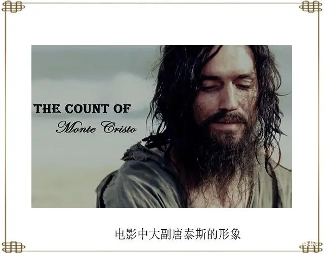

2022-11-05
宠物小精灵旅途八大师决赛小智vs丹帝，他能否实现梦想？
当我还是一个5岁小孩子时，就喜欢宠物小精灵，那时候一直想要一个皮卡丘陪伴。现在已经过去十几年了，这依然是我的梦想之一
我最喜欢小智和皮卡丘之间的默契，小智每次旅途都会换一只宠物，但是每一次都会留下皮卡丘，皮卡丘遇到危险小智总是第一个挡在它前面，而小智危险的时候皮卡丘也爆发出最大的能量。
小智是一个重视行动的人，他不会总是思考自己做不做的到，而是先去尝试通过结果来判断。
11.11日晚上17：55,b站搜索直播：八大师决赛，就是决赛的最后的一场了，能够实现梦想就看这一集了。期待中…
2022-11-05
我最喜欢的男演员：卷福
初中的时候读了一部分福尔摩斯探案集，对福尔摩斯的样子充满遐想
在我第一次看神探夏洛克时，那时候是在初中小饭桌和朋友们在河北卫视看的，后来我记忆中的福尔摩斯就成为了他这样，我从小就喜欢天才，但是自己不够聪明，卷福太适合演天才了，满足了我对天才的向往
他参演的霍金传、模仿游戏、奇异博士也是我很喜欢的电影
2022-11-05
我最喜欢的女演员：Anya Taylor-Joy
我第一次接触到安雅是在后翼弃兵中，她演的天才围棋少女很独特，通过对人物的内心的渲染，童年的经历，和她的一步一步的成长和迷失都很打动我
我最初喜欢她一部分是源于她的声音，她的混杂了好多国家口音的英语我认为十分动听，给了我即使口音不纯正依然能讲好英语的信心
我从油管看过一些她的采访，她也是一个幽默风趣的人，我认为她演得艾玛也是难得的佳作
clannad:团子大家族
第1-1集
对不起，由于技术原因，平板请使用浏览器的电脑模式观看，手机请不要使用浏览器的电脑模式观看，如仍然无法观看去B站搜clannad即可
这个动漫是我最喜欢的一部动漫，我认为里面的每一个人物都个性鲜明，并且有很好的治愈和教育的意义，有人说这部动漫讲述了人生，我也有同感。应该好多人都看过，但是我还是想向大家推荐。
2022-11-09
我看的第一部韩剧：我的大叔
刚刚准备跨考时，我的父母都不是很支持，我自己其实也不知道这个抉择对不对，当时加上隔离内心有些担忧，这时我偶然从b站推荐栏偶然看到这个视频，看到豆瓣评分竟然有9.4分，就试着看了一集，后来对女主李至安的独立、坚强、对生活的冷漠以及对善良的看法都感触颇深，很快就看完了整部。
故事的女主角是一个没有很小就失去父母、有着沉重的债务、需要赡养年迈的奶奶以及因自我保护而杀人封闭了内心的一个女孩。后来，她和正常人一样成为了一个普通却幸福的人，这中间经历了什么，我就不剧透了。
我常常在想，有多少处境可怜的孩子，因为没有人对他们进行正常的引导而远离光明和幸福，如果以后你遇到了这样的人，请一定努力帮助他，我们要向身边的迷失的人树立正常的价值观，让他们有一个幸福的未来

2022-11-09
我看的第二部韩剧：请回答1988
看完我的大叔之后我对高分韩剧有了不一样的认识，从知乎上搜了搜，看到有很多人推荐 请回答1988 我就也抱着尝试的态度看了
这部片讲述的是首尔的一个小镇上的关于亲情和友情的故事，故事中的几个年轻人从小时候就在一起玩耍，直到高中毕业，这部剧中有很多性格鲜明的角色，有很穷却总是帮别人买卖剩下的东西的父亲，有虽然总是欺负妹妹确努力且善良的姐姐、有围棋天赋极高却总是依赖其他人的天才崔泽六段、有学习成绩差却积极且乐于助人的女主角成德善，还有好多人
他们大家总是把自己家的菜分给大家，帮其他人带孩子或是在其他人家里长时间借宿。对于不怎么和邻居交流的我，这种关系令我十分羡慕

2022-11-10
舍友推荐:<<基督山伯爵>>
这是我大学看的几本书之一，是我的舍友推荐的，由于我从小不喜欢读书，所以打算大学的时候补一补，于是就选择了这本书
这本书不像其他外国小说，比较晦涩，它读起来很流畅，每个章节都很吸引人，所以我几乎很快就读完了，作为我看的第一本长篇小说，它成功的引起了我对读书的兴趣
主角唐戴斯原本是一名大副，做人真诚、善良、有能力，就在马上迎来自己的幸福的时候，被人陷害，关在地牢里14年，在这14年，他经历了对自己的怀疑、对未来的失望，因遇到一名老者，后变得博学多才、举止文雅，最后一步一步完成复仇，重新找到自己的幸福的故事
如果你也正处于绝望之中，想一想当时没有犯任何错误却在监狱里呆了14年的唐戴斯吧，相信光明的未来一定会到来，只要自己不放弃
名言名句
如果你渴望得到某样东西，你得让它自由，如果它回到你身边，它就是属于你的，如果它不会回来，你就从未拥有过它。
(点击图标切换至下一个名言)
{kind=link}